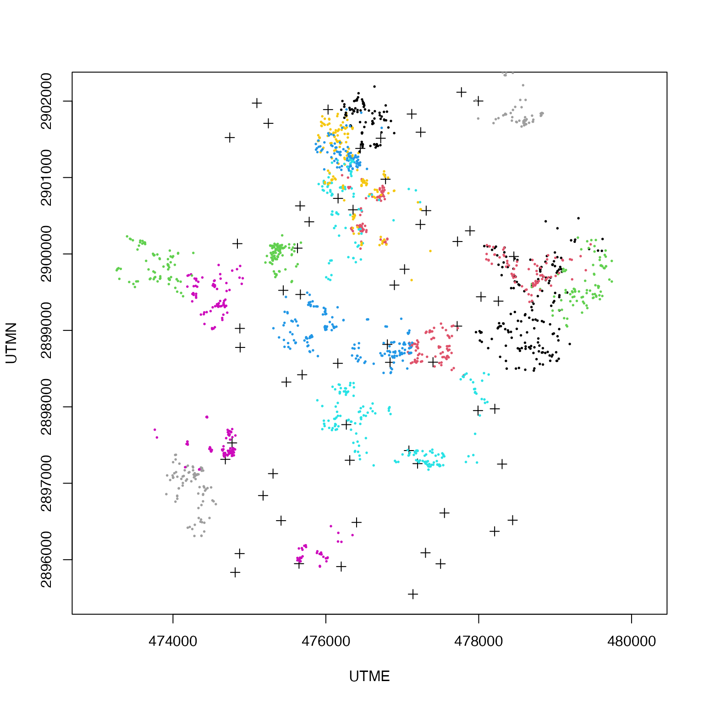
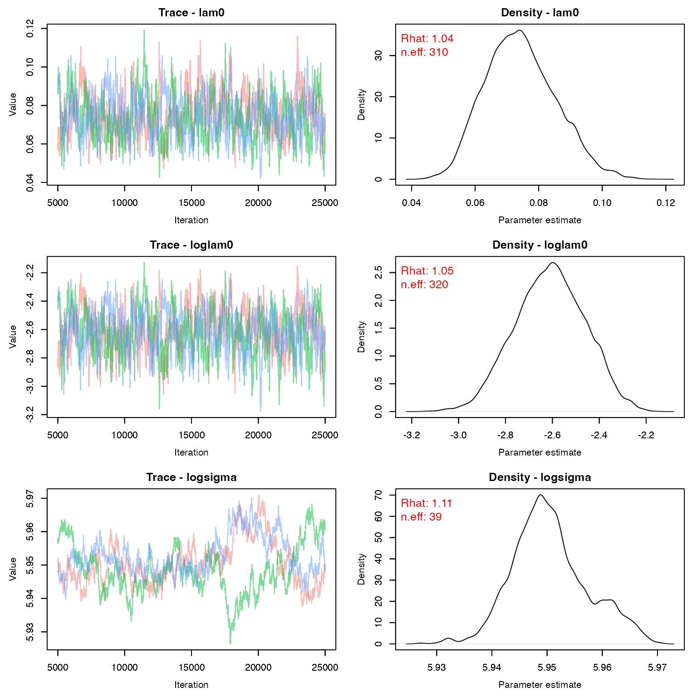
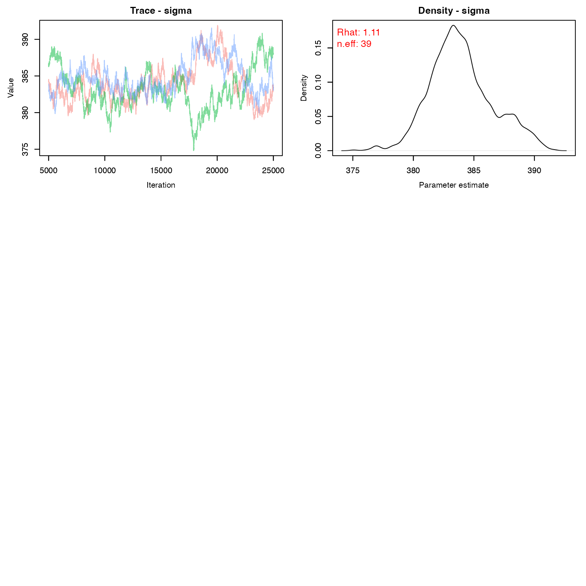
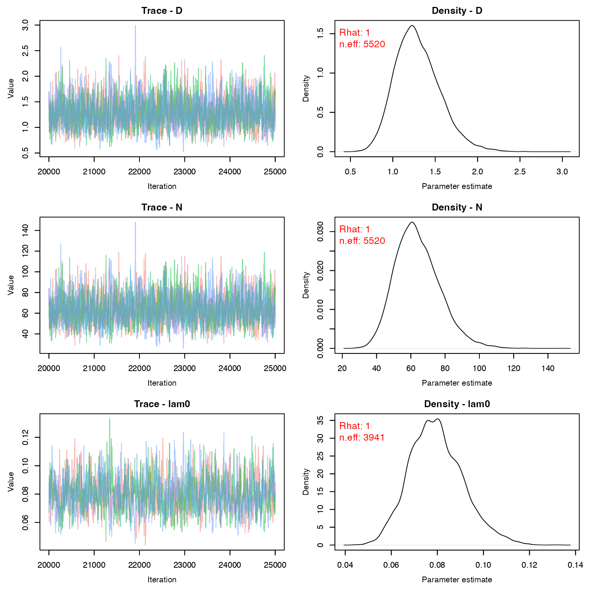
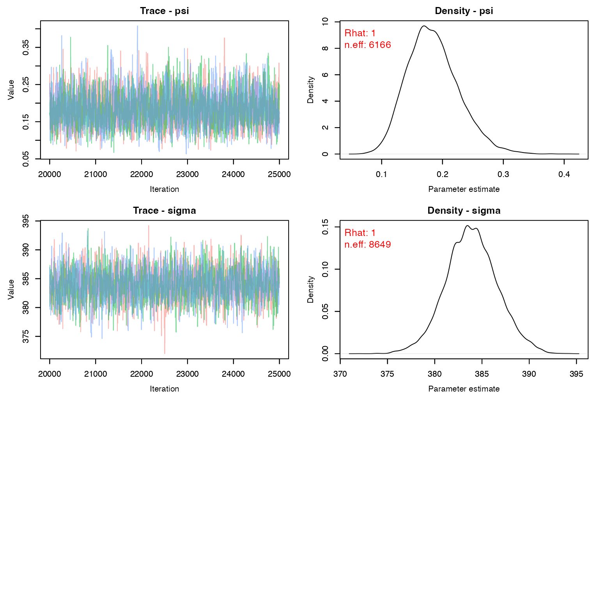

Lab13: 2 Stage SCR
Lab13_2StageSCR.RmdToday’s lab will focus on a two-step spatial capture recapture model. This is a bonus lab, so there is no homework.
If you want a published example of this type of model, check out this deer paper:
Margenau, Lydia L. S., Michael J. Cherry, Karl V. Miller, Elina P. Garrison, and Richard B. Chandler. 2022. “ Monitoring Partially Marked Populations Using Camera and Telemetry Data.” Ecological Applications 32(4): e2553. https://doi.org/10.1002/eap.2553
Lab Overview
As we talked about in lecture, unmarked SCR models can be somewhat unreliable without extra data. However, even a small amount of prior information about g_0 or \sigma makes a big difference and can turn an unhelpful model into a solid abundance estimate.
But how do we get more information about g_0 or \sigma? Using marked animals!
The basic idea is that a subset of animals are marked. We will use their capture histories to inform g_0 and \sigma for the entire population. It is critically important that the marked animals are representative of the unmarked individuals and the probability of detection of marked animals is the same as unmarked animals.
For today’s lab we will discuss how you can combine collar data (known locations) with unmarked SCR data (camera trap information) to make robust estimates of abundance.
Stage 1
In Stage 1, we will combine a movement model with the camera capture history of our collared animals to get posteriors for g_0 and \sigma.
Because we are not interested in abundance, we will only loop over our known, collared individuals. Each individual has an activity center \mathbf{s_{i}} with realized locations \mathbf{u_{i,t}}.
\large \mathbf{s_{i}} \sim Uniform(s_{min}, s_{max})
\large p_{i,j} = g_0*e^{(-\|s_i - x_j\|^2/(2\sigma^2))}
\large y_{j} \sim Binomial(1 - e^{-(\sum_{i = 1}^M p_{i,j}*z_i)}, K)
\large \mathbf{u_{i,t}} \sim Normal(s_{t-1}, \sigma^2)
Notice that the sigma for detection is the same as the sigma for movement.
The output of this model will then give us a posterior for both g_0 and \sigma.
Stage 2
In SCR models, g_0 and \sigma will always co-vary. As populations get sparser, g_0 tends to decrease as \sigma increases. Thus, we don’t just want the posterior of each value, we also want the covariance matrix associated with the posteriors of both of these parameters.
Then our unmarked model will be simple to fit and run.
You’ll sometimes see this written in the literature as:
\large log(\mathbf{X}) \sim Normal_k( \mathbf{\mu_k,\sum})
Which can be read as “the vector X is dstributed as a multivariate normal with mean vector \mu and variance-covariance matrix \sum”
In this case, \mathbf{\mu} is just a vector of length 2: (\widehat{g_0},\widehat{\sigma}) and the variance- covariance matrix is:
\sum = \begin{pmatrix} var(g_0) & cov(g_0, \sigma) \\ cov(\sigma, g_0) & var(\sigma) \end{pmatrix} If there were no covariance between \sigma and g_0, the left (minor) diagonal would be all 0s.
\large \Lambda = \int_{\mathcal{S}} \lambda(s)
\large \mathbf{s_{i}} \sim Uniform(s_{min}, s_{max})
\large z_{i} \sim Bernoulli(\frac{\Lambda}{M})
\large p_{ij} = g_0*e^{(-\|s_i - x_j\|^2/(2\sigma^2))}
\large y_{j} \sim Binomial(1 - e^{-(\sum_{i = 1}^M p_{i,j}*z_i)}, K)
\large N = \sum^M_{i=1} z_i
Model in Nimble - Stage 1
Before we can run this model in Nimble, we need an example dataset. We’re going to steal some data from the paper I referenced above, since the authors were kind enough to make both the data and model available on Zenodo. This data comes from a group of camera traps in South Florida in 2015.
I have modified their code below to make this a static model, but check out the original paper if you want to know how to run an open-population version of this model.
markedNimble <- nimbleCode({
### Prior Distributions
# Detection parameter- lam0
loglam0 ~ dnorm(log(0.1), sd = 0.5) # mean (over time) lam0 on log scale
lam0 <- exp(loglam0)
# spatial scale parameter - sigma
logsigma ~ dnorm(log(380), sd = 0.25) # mean (over time) sigma on log scale
sigma <- exp(logsigma)
# SCR model
for(i in 1:n0) { # loop over known
#for(t in first[i]:last[i]) { # loop over each time interval
s[i,1] ~ dunif(xlim[1], xlim[2]) # activity centers probabilities assumed uniform
s[i,2] ~ dunif(ylim[1], ylim[2])
# Model telemetry data conditional on activity centers
for(k in 1:nTelemLocs[i]) { # for each telemetry location
u[i,k,1] ~ dnorm(s[i,1], sd = sigma) # x coord inform activity centers
u[i,k,2] ~ dnorm(s[i,2], sd = sigma) # y coord
}
for(j in 1:nTraps) { # loop over each trap location
# calculate distance from activity center to trap location
d[i,j] <- sqrt((s[i,1]-x[j,1])^2 + (s[i,2]-x[j,2])^2) #x = trap location
for(k in 1:nOccasions) { # loop over each sampling occassion
# calculate encounter rate as a distance decay fx with operational matrix
lambda[i,j,k] <- lam0*exp(-d[i,j]^2 / (2*sigma^2))*oper[j,k] #was the camera working
# convert lambda to detection prob, Pr(at least one detection)
psi[i,j,k] <- 1-exp(-lambda[i,j,k])
# This implies a Poisson distribution for independent counts
# convert to binary counts using bernoulli distribution
y[i,j,k] ~ dbern(psi[i,j,k])
}
}
}
})Grab Some Data for Part 1
Their model was fancier than what we’re going to fit, so we’ll only use the 29th fortnight of their data (it has the most detection data).
data('scr2stage')
telemetry.deer2 <- scr2stage$telemetry.deer[,,,29] #first fortnight
nTelemLocs2 <- scr2stage$nTelemLocs[, 29]
keepers <- which(nTelemLocs2 >0)
telemetry.deer2 <- telemetry.deer2[keepers,,] #only keep ones with data
nTelemLocs2 <- nTelemLocs2[keepers]
traps <- scr2stage$x
traphist <- scr2stage$histories4D[keepers,,,29]Let’s do a quick plot so we know what’s happening:
plot(traps, asp = 1, pch= 3)
for(k in 1:nrow(telemetry.deer2)){
points(telemetry.deer2[k,,], col = k, pch = 19, cex= .25)
}
Cleanup some more data pre-nimble
# number of marked individuals
N <- length(nTelemLocs2)
# Set the limits of study area to the camera grid with 1 km buffer
xlim = range(traps[,1])+c(-1000,1000)
ylim = range(traps[,2])+c(-1000,1000)
# number of secondary sampling occasions (1 fortnight)
K <- 14
operational <- scr2stage$oper3D[,,29]
constants <- list(xlim = xlim, ylim = ylim,
nTraps = nrow(traps),
n0=N, nOccasions = K,
x = traps,
nTelemLocs = nTelemLocs2,
oper = operational)
data <- list(y=traphist,
u=telemetry.deer2
)
# Start activity centers:
si <- array(NA, c(N, 2))
for(i in 1:N) {
si[i,1] <- runif(1, xlim[1], xlim[2])
si[i,2] <- runif(1, ylim[1], ylim[2])
}
# Initial values
inits <- list(loglam0 = runif(1,log(0.05),log(0.6)),
logsigma = log(850),
s = si
)
params <- c("logsigma", "loglam0", 'sigma', 'lam0')Check model:
mod.nimble <- nimbleModel(code = markedNimble,
constants = constants,
data = data,
inits = inits)
# Did everything initialize correctly?
mod.nimble$calculate()
#> [1] -49264Run Stage 1
library(parallel)
cl <- makeCluster(3) #each chain will be run separately
clusterExport(cl = cl, varlist = c("inits", "constants", 'data', "markedNimble", 'params'))
stage1 <- clusterEvalQ(cl = cl,{
library(nimble) #reload packages for each core
library(coda)
prepnim <- nimbleModel(code = markedNimble,
constants = constants,
data = data,
inits = inits, calculate = T)
mcmcnim <- configureMCMC(prepnim, monitors = params, print = T)
nimMCMC <- buildMCMC(mcmcnim) #actually build the code for those samplers
Cmodel <- compileNimble(prepnim) #compiling the model itself in C++;
Compnim <- compileNimble(nimMCMC, project = prepnim) # compile the samplers next
Compnim$run(niter = 100000, nburnin = 75000, thin = 1)
res <- (as.mcmc(as.matrix(Compnim$mvSamples)))
return(res)
}) #this will take awhile and not produce any progress bar
stage1 <- as.mcmc.list(stage1)
stopCluster(cl)Check Output:
We would probably want to run this just a tad longer to get better convergence
MCMCvis::MCMCtrace(stage1, pdf = F, Rhat = T, n.eff = T, iter = 20000)
Before we move on to stage 2, we need to create a variance-covariance matrix for g_0 and \sigma. We need the log values for this.
samps_stage1 <- as.matrix(stage1[,c("loglam0", "logsigma"),])
xbar <- colMeans(samps_stage1)
xvar <- var(samps_stage1)Our means on the log scale
xbar
#> loglam0 logsigma
#> -2.617 5.951Our variances on the log scale
xvar
#> loglam0 logsigma
#> loglam0 0.0229673 -1.522e-04
#> logsigma -0.0001522 4.939e-05Model in Nimble - Stage 2
This step should look just like a normal unmarked SCR model, with the exception of the priors.
densityNimble <- nimbleCode({
### Prior Distributions
# Use the posterior estimates from the marked population as informative
# priors for the unmarked population
# Multivariate normal distribution
log_sig_lam0[1:2] ~ dmnorm(prior_means[1:2], cov=prior_vcov[1:2,1:2])
sigma <- exp(log_sig_lam0[2])
lam0 <- exp(log_sig_lam0[1])
psi~ dbeta(1,1) #real or not?
###Unmarked SCR
for(i in 1:M){ # loop over each individual
# probability of being a member of the population
z[i] ~ dbern(psi)
# activity centers probabilities assummed uniform
s[i,1] ~ dunif(xlim[1], xlim[2])
s[i,2] ~ dunif(ylim[1], ylim[2])
for(j in 1:J){ # loop over each trap location
# calculate distance from activity center to trap location
d[i,j] <- sqrt((s[i,1]-x[j,1])^2 + (s[i,2]-x[j,2])^2)
lambda[i,j] <- lam0*exp(-d[i,j]^2 / (2*sigma^2))
}
}
for(j in 1:J) {
Hazard[j] <- inprod(lambda[1:M,j] , z[1:M])
p[j] <- 1-exp(-Hazard[j])
nsum[j] ~ dbin(p[j], K[j])
}
N <- sum(z[1:M])
D <- N/Area
})Grab Some Data for Part 2
We now also need our unmarked counts of the number of days each camera saw at least one deer. As we can see, despite being out for 2 weeks, there were many sites with relatively few detections.
nsum <- apply(scr2stage$n3D, c(1,3), sum)
nsum <- nsum[,29]
nsum
#> [1] 0 0 0 1 0 0 0 0 0 0 0 3 0 2 6 0 0 1 3 4 0 2 2 1 5 2 0 3 0 0 1 1 2 0 5 0 1 1
#> [39] 0 1 1 0 0 0 0 1 0 1 4 0 3 1 0 3 1 2 2 0 9 0
Area <- (xlim[2]-xlim[1])*(ylim[2]-ylim[1])/1e6 ## sq-km
M <- 350 #lots of deer!Nimble objects for part 2
constants <- list(M=M, K = rowSums(operational),
J=nrow(traps),
xlim = xlim, ylim = ylim,
Area = Area, x = traps)
data <- list(nsum = nsum,
prior_means = xbar, prior_vcov = xvar)
log_sig_lam0.init <- rep(NA, 2)
log_sig_lam0.init[1] <- log(.1)
log_sig_lam0.init[2] <- log(800)
M.x <- runif(M, xlim[1], xlim[2])
M.y <- runif(M, ylim[1], ylim[2])
si <- array(NA, c(M, 2))
for(i in 1:M){
si[i, 1] <- M.x[i]
si[i, 2] <- M.y[i]
}
inits <- list(s = si, z = rep(1,M),
log_sig_lam0 = log_sig_lam0.init,
psi = 1)
params <- c("sigma", "lam0", "psi",
"N", "D")Check model:
mod.nimble2 <- nimbleModel(code = densityNimble,
constants = constants,
data = data,
inits = inits)
# Did everything initialize correctly?
mod.nimble2$calculate()
#> [1] -13617Run Stage 2
This part takes a little bit longer, but still isn’t too bad in terms of time. Maybe 10 minutes?
library(parallel)
cl <- makeCluster(3) #each chain will be run separately
clusterExport(cl = cl, varlist = c("inits", "constants", 'data', "densityNimble", 'params'))
stage2 <- clusterEvalQ(cl = cl,{
library(nimble) #reload packages for each core
library(coda)
prepnim <- nimbleModel(code = densityNimble,
constants = constants,
data = data,
inits = inits, calculate = T)
mcmcnim <- configureMCMC(prepnim, monitors = params, print = T)
nimMCMC <- buildMCMC(mcmcnim) #actually build the code for those samplers
Cmodel <- compileNimble(prepnim) #compiling the model itself in C++;
Compnim <- compileNimble(nimMCMC, project = prepnim) # compile the samplers next
Compnim$run(niter = 100000, nburnin = 75000, thin = 1)
res <- (as.mcmc(as.matrix(Compnim$mvSamples)))
return(res)
}) #this will take awhile and not produce any progress bar
stage2 <- as.mcmc.list(stage2)
stopCluster(cl)Make sure psi is reasonable and other outputs seem to have mixed.
MCMCvis::MCMCtrace(stage2, pdf = F, Rhat = T, n.eff = T)
The estimated density (per square kilometer) for female deer at this location is:
MCMCsummary(stage2, 'D', Rhat = F, n.eff = F)
#> mean sd 2.5% 50% 97.5%
#> D 1.295 0.2633 0.8489 1.273 1.88